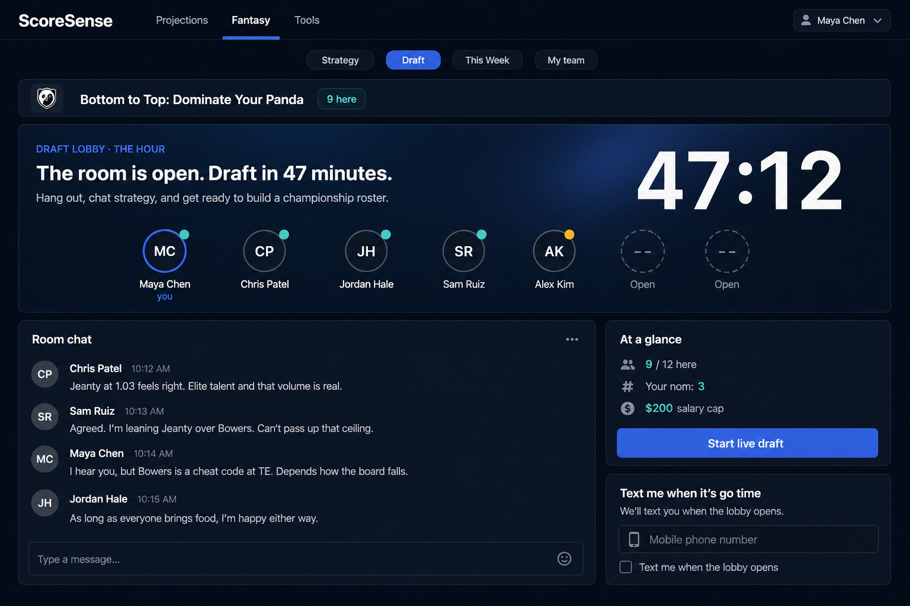
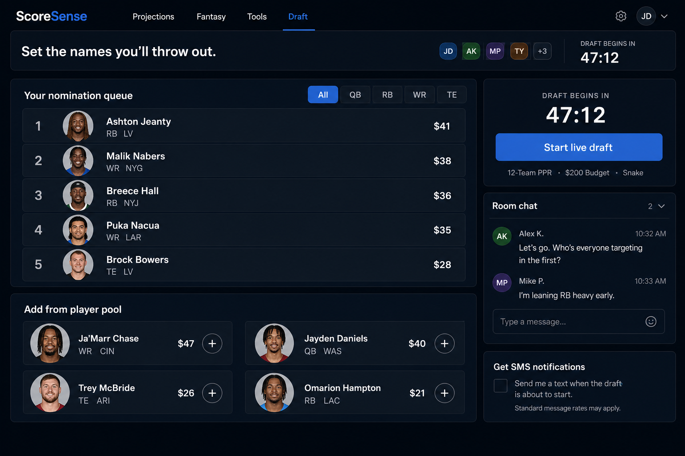
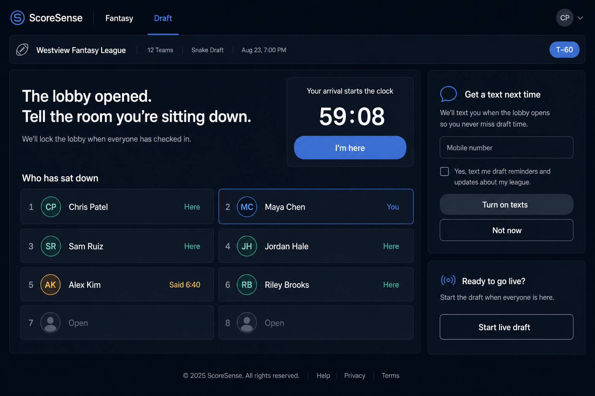
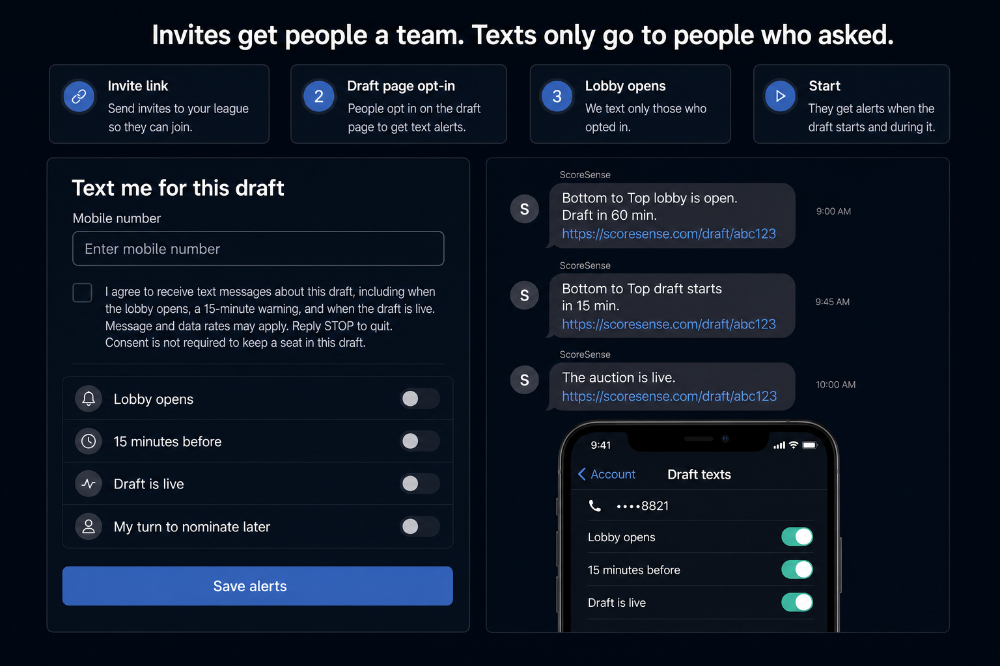

Until T–60
Setup · keep
Availability calendar, schedule the night, claim seats, text the invite link. What Draft is now.
Design review · Draft
Today Draft is a setup page: calendar, invite links, seats. That still matters weeks out. The missing state is the hangout — chat, presence, and lining up your board — once the night is real. Pick the room that feels like ScoreSense. SMS is a separate opt-in, not the invite.
Availability calendar, schedule the night, claim seats, text the invite link. What Draft is now.
Lobby opens. People show up, talk, order their board. Commissioner can still start early.
Board-first auction or snake. Do not wrap this in setup chrome.
Experience chrome: calendar, draft night, who is in, nomination order, invite rail. Useful for staffing the league. Dead as a hangout.
Baseline — not a candidate.

Countdown and who’s here lead. Chat is on the page, not only in the dock. Nomination order stays a thin strip. Queue three names if you want — the room is the point.
Best if the night is social first. Closest to “fun to hang out.”

Your nomination queue is the canvas. Drag players, see values, leave chat and presence on the rail. Same hour window, more control.
Best if people already talk in the group text and want to use the hour to set a board.

Arrival is the ritual. “I’m here” is the next action. First-run SMS sits on the page. The room fills as people tap in. Chat and a short queue follow.
Best if late arrivals are the pain, and you want alerts to land on a clear moment.

How the claim link, member room link, email ping, and a new account-linked text stay separate. Unchecked consent. Number lives on the account.
Works with A, B, or C. Do not ship texts without this.
Recommendation if you want one default.
A · The Hour as the waiting surface, with B’s queue as a section you can open (not the whole page), and C’s “I’m here” plus SMS card in the rail. Setup stays the Draft page until T–60 or the commissioner taps Open lobby.
Design mockups — Fantasy · Draft waiting state. Tokens only. Nothing here ships.